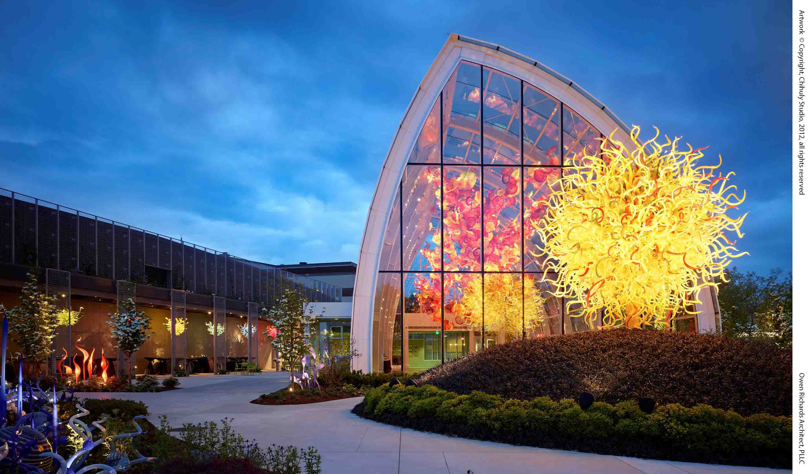
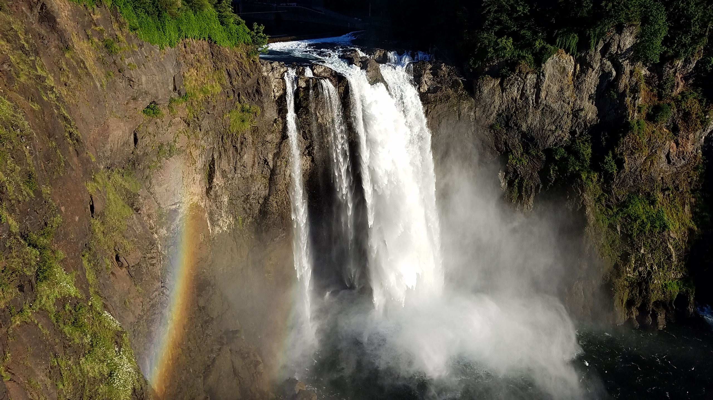
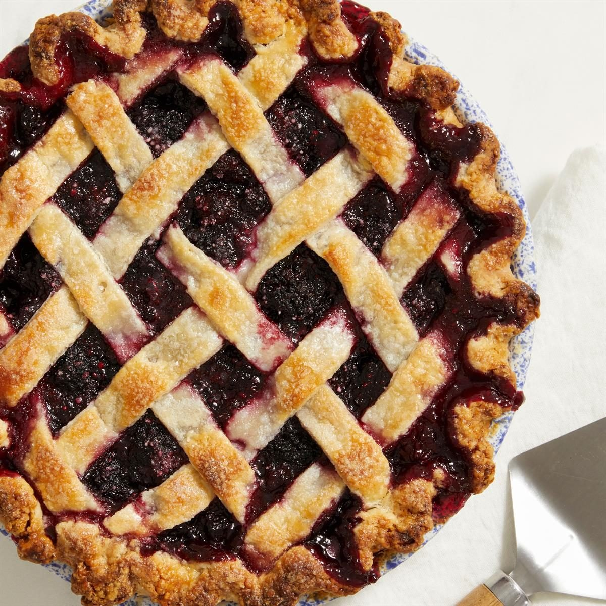
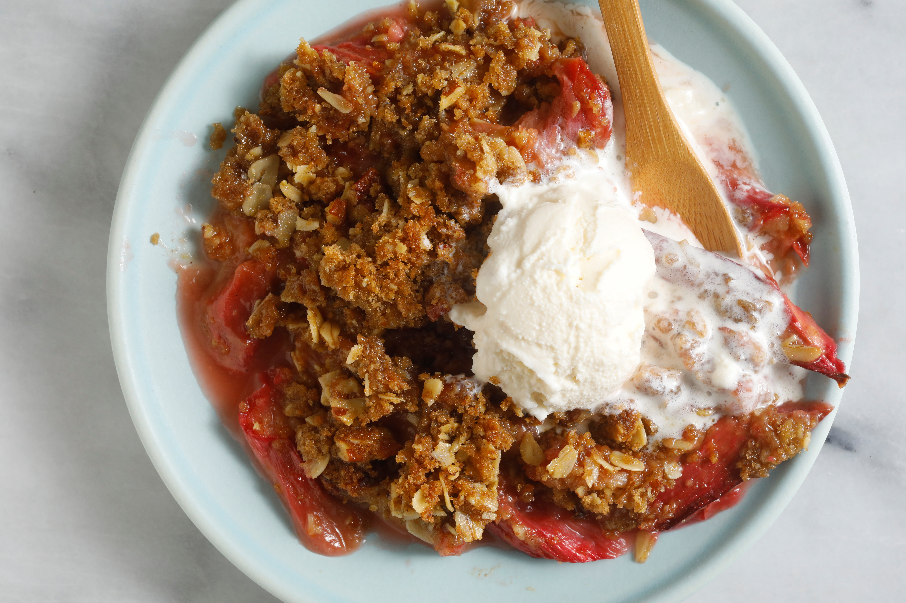

Welcome
“Discover the Evergreen State of Washington, where lush forests, cool coastlines, and innovative cities come together in perfect harmony. Its natural beauty and rich culture offer travelers refreshing views, memorable adventures, and a deeper appreciation of the Northwest.”
Tourist Spots
-
Chihuly Garden and Glass
This must-see museum exhibits creative and colorful blown glass sculptures of renowned artist Dale Chihuly. Eight indoor galleries and lush landscaped gardens feature a mix of new and past significant works. They are awe-inspiring whether you visit during the day, or in the evening when the sculptures are lit up. The highlight here is a 100-foot-long glass sculpture suspended in a glass conservatory—one of his largest ever.
 -
Mount Rainier
Mount Rainier and its associated geologic and glacial features. At a height of 14,410 feet, Mount Rainier is the highest volcanic peak in the contiguous United States. It has the largest alpine glacial system outside of Alaska and the world's largest volcanic glacier cave system (in the summit crater).

-
Snoqualmie Falls
The waterfall is a sacred site to the Snoqualmie Tribe. Snoqualmie Falls is the second most visited natural landmark in Washington after Mount Rainier. It is more than twice as high as Niagara Falls. Listed on the National Register of Historic Places, the falls are a site of natural, historic, and cultural convergence.

Famous Food
-
Marionberry Pie
If you asked a Washingtonian at random about their favorite pie, they'd probably tell you what I'd tell you: marionberry. Invented in the Pacific Northwest, this blackberry hybrid is tart and sweet. Locals adore it mixed into ice cream, coffee cake, and coffee drinks. Eating marionberries is considered a rite of passage for new residents, and it's a staple for long-time Washingtonians.
 -
Rhubarb Crisp
Due to the Nordic climate in Western Washington, there are a lot of Scandinavian foods that are super popular in Washington, and rhubarb desserts are one of them. In fact, much of the rhubarb in the United States comes from Washington because it grows so plentifully. Like many from my state, I grew up picking this resilient stalk from our family garden, and Washington towns hold rhubarb-centric claims to fame (like Sumner, the "Rhubarb Pie Capital of the World").
 -
Salmon Chowder
Often served in a West Coast bread bowl, salmon chowder is the epitome of Washington cuisine. It's hearty, smoky, drowned in herbs, and chock-full of seafood. It's perfect for dinners outside during the 10 p.m. sunset season, when a big bowl of chowder is excellent fuel for summer swims. And, it's just as ideal for dark winter evenings when you need to hunker down and warm up from the rain.